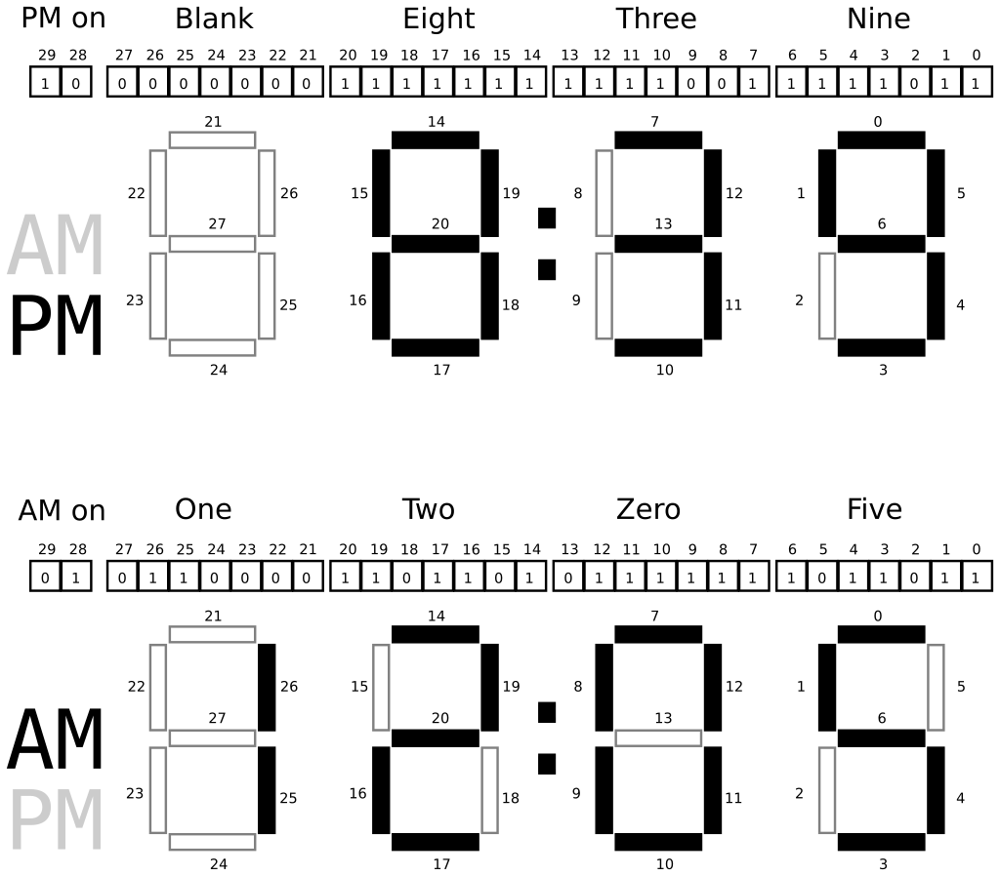

CSCI 2021 Project 2: Bit Ops and Debugging
- Due: 11:59pm Wed 10/20/2021
- Approximately 3.0-4.0% of total grade
- Submit to Gradescope
- Projects are individual work: no collaboration with other students is allowed. Seek help from course staff if you get stuck for too long.
CODE/TEST DISTRIBUTION: p2-code.zip
VIDEO OVERVIEW: Canvas Week 5 Videos: Fri 10/08
CHANGELOG:
- Thu Oct 14 10:12:30 AM CDT 2021
- Some references to the function
set_display_bits_from_tod()have been removed as this file was renmaedset_display_from_tod()(the_bits_was removed). - Tue Oct 12 12:12:17 PM CDT 2021
- A mistake for the digit
5bit pattern in a figure has been corrected as per Post 199. - Fri Oct 8 11:37:34 AM CDT 2021
- The initial release of the
p2-code.zipwas missing a file. This was corrected within 30 minutes of release but if you grabbed the code early, get the new version of test files in the currentp2-code.zip.
1 Introduction
Bit-level operations are common in C and systems programming. This assignment features a problem in which shifting and bitwise AND/OR-ing are required to complete the requirements.
Debugging is also a critical skill enabled by the debugger. The
second problem in the assignment makes use of the GNU Debugger, gdb,
to work through a puzzle program requiring specific inputs to pass its
"phases".
Makefile
As in the first assignment, a Makefile is provided as part of this
project. The essential targets pertinent to each problem are described
in those sections. The Makefile is equipped with a brief help
listing:
> make help Typical usage is: > make # build all programs > make clean # remove all compiled items > make zip # create a zip file for submission > make prob1 # built targets associated with problem 1 > make test-prob1 testnum=5 # run problem 1 test #5 only > make test-prob2 # run test for problem 2 > make test # run all tests
Automated Tests
As in previous assignments, automated tests are provided and associated with problems. Each problem describes how to run tests associated with it. Generally this is done as before:
> make test-prob1 gcc -Wall -Wno-comment -Werror -g -c clock_main.c gcc -Wall -Wno-comment -Werror -g -c clock_sim.c ... ./testy test_prob1.org ============================================================ == test_prob1.org : Problem 1 test_clock_update and clock_main tests == Running 35 / 35 tests 1) test_clock_update midnight-set : ok 2) test_clock_update after-midnight-set : ok 3) test_clock_update after-1am-set : ok 4) test_clock_update nearly-noon-set : ok 5) test_clock_update is-noon-set : ok ... > make test-prob2 # run "tests" associated with problem 2 ... > ./puzzlebox input.txt # same as above: run puzzlebox to test answers
2 Download Code and Setup
Download the code pack linked at the top of the page. Unzip this which will create a project folder. Create new files in this folder. Ultimately you will re-zip this folder to submit it.
| File | State | Notes |
|---|---|---|
Makefile |
Provided | Build file to compile all programs |
clock.h |
Provided | Problem 1 header file |
clock_main.c |
Provided | Problem 1 main() function for clockmeter simulation |
clock_update.c |
CREATE | Create this file and write required function in it to complete Problem 1 |
test_clock_update.c |
Testing | Problem 1 functions tests for clock_upate.c |
test_prob1.org |
Testing | Problem 1 testing data file |
testy |
Testing | Problem 1 test running script |
clock_examples.sh |
Provided | Problem 1 script to produce a variety of clock examples |
puzzlebox.c |
Provided | Problem 2 Debugging problem |
input.txt |
EDIT | Problem 2 Input for puzzlebox, fill this in |
3 Problem 1: Digital Clock Simulation
3.1 Overview
You are tasked with writing code which will be run by a microcontroller in a digital clock. The hardware has the following relevant features.
- An internal clock that increments 1 time per second. The value reported by the clock is stored in a register. In C this is presented as a global variable.
- A digital display with a control port; setting certain global variable will change the display to show information to a user of the clock.
- User code that you will need to write to update the display based on the value reported by the internal clock.
- A simulator program with
Makefileto test your code
Each feature is discussed in subsequent sections.
Time of Day Register
A special register is periodically updated to contain an integer which is the number of seconds since the beginning of the day. This special register is accessible in C programs via a global variable:
extern int TIME_OF_DAY_SEC; // Time of day in seconds. Tied to a hardware clock that automatically // increments it 1 time per second starting at midnight. The // simulatator provides a C global variable to emulate this part of // the hardware. This variable is present when #include "clock.h" is // used and should not be declared in any user code.
You do not need to define this variable as it is already there. You do not need to set this variable as it is automatically changed by the hardware. Instead, you will need to access its value to determine various aspects of the current time relevant to display.
- Whether it is AM or PM (AM is hours 12midnight to 11:59am, PM if 12noon to 11:59pm)
- The hour of the day (12-hour format so this is 1-12)
- The ones and tens digits in the hour (blank or 1 for tens, 0-9 for ones)
- The time in minutes (0-59)
- The ones and tens digits in the minutes (0-5 for tens, 0-9 for ones)
Clock Display Port Register
A special register controls the display of the LCD clock. This register is accessible in C programs via a global variable.
extern int CLOCK_DISPLAY_PORT; // Global variable used to control the LCD display on the // clock. Making changes to this variable will change the clock // time. Type ensures 32 bits.
Your code can examine the current values of the register but this is not relevant to the present problem. More importantly you will need to set the bits of this variable to properly show the time.
The following diagram shows bit patterns for various digits and how
they will be displayed in the ones digit of the minutes place.
Digits are displayed by darkening certain bars in the display which
correspond to certain bits in the CLOCK_DISPLAY_PORT register being
set.
Figure 1: Bit to clock display bar correspondence for the ones digit of the minute. The 0th bit controls the upper horizontal bar, the 1th bit controls the horizontal bar counter-clockwise from it, and so on around the 6 outer bars in a counter-clockwise fashion. The 6th bit controls the middle horizontal bar. When a bit is 1 (set), the bar will be darkened while when the bit is 0 (clear) the bar will not be displayed (shown as empty). The combinations of bits shown are the only ones that arise when showing digits for times.
Notice the following.
- Bits that are set (equal to 1) will turn on (darken) one bar of the clock digit
- Bits that are clear (equal to 0) will turn off one bar of the digit
- 7 bits are required to control the display of one digit
- The bits are arranged with the low order bit (bit 0) at the top and
progress counter-clockwise around the digit.
- Bit 0 top
- Bit 1 upper left
- Bit 2 lower left
- Bit 3 bottom
- Bit 4 lower right
- Bit 5 upper right
- Bit 6 middle
- The programmer can set bits to any pattern which will be displayed but only patterns shown in the figure correspond to digits of interest.
Time is displayed with several adjacent digits along with an AM/PM
display. The diagram below shows two full times along with the bits
representing the digits. The bits correspond to how the global
variable CLOCK_DISPLAY_PORT should be set in order to make the clock
appear as it does.

Figure 2: Two full examples of how the 30 bits of the clock display state control which parts of the clock are shown. Each digit follows the same pattern of bit to bar correspondence as the right-most with bits. The lowest order (rightmost) bit controls the top bar of each digit and proceed around the outside counter-clockwise with the final bit for each digit controlling the middle bar. The highest order bits (28 and 29) control whether the "AM" or "PM" lights are shown. Note that both could be shown at the same time or neither shown but this should not be done for actual times.
Notice the following.
- You may presume that the
CLOCK_DISPLAY_PORTregister is a 32-bit integer. - 30 bits are used to control the full clock display.
- Bits 0-6 control the ones place of the minutes
- Bits 7-13 control the tens place of the minutes
- Bits 14-20 control the ones place of the hours
- Bits 21-27 control the tens place of the hours
- Bit 28 controls whether AM is displayed
- Bit 29 controls whether PM is displayed
- Bits 30 and 31 are not used and should always be 0.
3.2 clock_update.c: Updating the Display with User Code
Periodically the microcontroller will run code to adjust the LCD display for the clock to show the current time. This function is called:
clock_update()
and it will be your job to write this function.
Rather than write everything that needs to be done within
clock_update(), several helper functions will be used to divide this
task into several more manageable and testable chunks.
These should all be written in clock_update.c and are as follows.
Converting time of Day in Seconds to a Struct
int set_tod_from_secs(int time_of_day_sec, tod_t *tod); // Accepts time of day in seconds as an argument and modifies the // struct pointed at by tod to fill in its hours, minutes, // etc. fields. If time_of_day_sec is invalid (negative or larger // than the number of seconds in a day) does nothing to tod and // returns 1 to indicate an error. Otherwise returns 0 to indicate // success. This function DOES NOT modify any global variables // // CONSTRAINT: Uses only integer operations. No floating point // operations are used as the target machine does not have a FPU. // // CONSTRAINT: Limit the complexity of code as much as possible. Do // not use deeply nested conditional structures. Seek to make the code // as short, and simple as possible. Code longer than 40 lines may be // penalized for complexity.
This function works with the struct tod_t defined in clock.h which
has the following layout.
// Breaks time down into 12-hour format
typedef struct{
short hours;
short minutes;
short seconds;
char ampm; // 1 for am, 2 for pm
} tod_t;
The process of filling in values is simply a matter of doing some division/modulo and assigning values.
Setting bits in an integer according to a tod_t
int set_display_from_tod(tod_t tod, int *display); // Accepts a tod and alters the bits in the int pointed at by display // to reflect how the clock should appear. If any fields of tod are // negative or too large (e.g. bigger than 12 for hours, bigger than // 59 for min/sec), no change is made to display and 1 is returned to // indicate an error. Otherwise returns 0 to indicate success. This // function DOES NOT modify any global variables // // May make use of an array of bit masks corresponding to the pattern // for each digit of the clock to make the task easier. // // CONSTRAINT: Limit the complexity of code as much as possible. Do // not use deeply nested conditional structures. Seek to make the code // as short, and simple as possible. Code longer than 85 lines may be // penalized for complexity.
This function will need to do bit shifting along with bitwise operations to construct the correct bit patter for the clock display.
A good trick to use is to create a series of bit patterns that
correspond to the various digits. For example, according to the
diagrams above, the bit patter for 9 is 0b1101111. If a 9
should appear on the clock somewhere, this bit pattern should be
shifted and combined with the existing bits in display so that a 9
will show. Creating similar constant mask patterns for each digit
and AM/PM is a good way to simplify this problem.
A detailed explanation of one approach to the problem:
- Create an array of bit masks for each of the digits 0-9. The 0th
element of the array contains a bit mask like
0b0111111which represents the bits that should be set for a 0 digit, the 1th element of this array has a mask like0b0110000which are the bits to be set for a 1. There should be ten entries in this array in indices 0-9. - Use modulo to determine the integer value for the ones and tens
digits for both hours and minutes. Call these variables something
like
min_onesandmin_tensand similarly for hours. Each variable should be in the range 0-9. - Start with a state variable of 0 (all 0 bits).
- Use
min_onesto index into your array of masks to determine the bits that should be set for it. Combine the state variable withmin_onesmask. - Combining bits here is a logical operation of setting all bits that are one in the mask to 1 in the state variable.
- Use
min_tensto index into your array of masks for the right mask for that digit. The bits corresponding to the tens place of the minutes is shifted to the left by 7 bits so shift the mask to the left and combine it with the state variable. - Repeat this process for the ones digit of the hours (shifted by 14 to the left) and the tens digit of the hour (shifted by 21).
- The tens digit of the hour is special in that it should be either 1 or blank (don't show a 0 for hours 1-9) so adjust your mask appropriately before shifting.
- Set the 28th bit of the state if the time is in the AM or the 29th bit if time is in the PM.
- The state variable should now be populated.
Changing the clock display
int clock_update(); // Examines the TIME_OF_DAY_SEC global variable to determine hour, // minute, and am/pm. Sets the global variable CLOCK_DISPLAY_PORT bits // to show the proper time. If TIME_OF_DAY_SEC appears to be in error // (to large/small) makes no change to CLOCK_DISPLAY_PORT and returns 1 // to indicate an error. Otherwise returns 0 to indicate success. // // Makes use of the set_tod_from_secs() and // set_display_from_tod() functions. // // CONSTRAINT: Does not allocate any heap memory as malloc() is NOT // available on the target microcontroller. Uses stack and global // memory only.
This function makes use of the previous two functions and the global variables that correspond to the clock hardware to alter the display. It should be relatively short by making use of the previous functions.
3.3 Clock Simulator
While we do not have actual hardware with the features mentioned, a
simulator for the clock system is in the provided files clock_main.c
and clock_sim.c. You do not need to modify or understand code in
either file to complete the HW though it will certainly expand you C
skills to spend some time examining them.
The main() function in clock_main.c accepts a command line argument
which is a number of seconds since the beginning of the day and will
call your functions for this problem and show results for it. You are
encouraged to use this function to test your code incrementally
- Examine whether
set_tod_from_secs()is correct based on the first part of output inclock_main.c - Once
set_tod_from_secs()is complete, examine whether the output ofset_display_from_tod()is correct based on the latter part of the output. - Once both these functions are correct, examine whether
cock_update()is correct based on the final part of the output of themain()function.
Note that there are a variety of functions in the file clock_sim.c
which are used to simulate how the clock will display. This is also
where the global variables CLOCK_DISPLAY_PORT and TIME_OF_DAY_SEC
are defined. However, you do not need to modify or even understand
the code in clock_sim.c. It is only used to show how the clock would
look when the CLOCK_DISPLAY_PORT bits are set.
3.4 Sample Runs of clock_main
You can build the clock_main executable via
> make OR > make clock_main
Below are samples generated by compiling and running the main()
function in the clock_main.c file. The code is compiled by using the
provided Makefile to create the clock_main program. It compiles the
clock_sim.c library along with the functions you write in the file
clock_update.c and the main() in clock_main.c.
> make clock_main
make: 'clock_main' is up to date.
> ./clock_main 0
TIME_OF_DAY_SEC set to: 0
result = set_tod_from_secs( 0, &tod );
result: 0
tod = {
.hours = 12
.minutes = 0
.seconds = 0
.ampm = 1
}
Simulated time is: 12 : 00 : 00 am
result = set_display_from_tod(tod, &display);
result: 0
display is
bits: 00 01 0110000 1101101 0111111 0111111
index: 30 28 21 14 7 0
result = clock_update();
result: 0
CLOCK_DISPLAY_PORT is
bits: 00 01 0110000 1101101 0111111 0111111
index: 30 28 21 14 7 0
Clock Display:
# #### #### ####
# # # # # #
# # o # # # #
# #### # # # #
# # o # # # #
# # # # # # AM
# #### #### ####
> ./clock_main 101
TIME_OF_DAY_SEC set to: 101
result = set_tod_from_secs( 101, &tod );
result: 0
tod = {
.hours = 12
.minutes = 1
.seconds = 41
.ampm = 1
}
Simulated time is: 12 : 01 : 41 am
result = set_display_from_tod(tod, &display);
result: 0
display is
bits: 00 01 0110000 1101101 0111111 0110000
index: 30 28 21 14 7 0
result = clock_update();
result: 0
CLOCK_DISPLAY_PORT is
bits: 00 01 0110000 1101101 0111111 0110000
index: 30 28 21 14 7 0
Clock Display:
# #### #### #
# # # # #
# # o # # #
# #### # # #
# # o # # #
# # # # # AM
# #### #### #
> ./clock_main 4170
TIME_OF_DAY_SEC set to: 4170
result = set_tod_from_secs( 4170, &tod );
result: 0
tod = {
.hours = 1
.minutes = 9
.seconds = 30
.ampm = 1
}
Simulated time is: 01 : 09 : 30 am
result = set_display_from_tod(tod, &display);
result: 0
display is
bits: 00 01 0000000 0110000 0111111 1111011
index: 30 28 21 14 7 0
result = clock_update();
result: 0
CLOCK_DISPLAY_PORT is
bits: 00 01 0000000 0110000 0111111 1111011
index: 30 28 21 14 7 0
Clock Display:
# #### ####
# # # # #
# o # # # #
# # # ####
# o # # #
# # # # AM
# #### ####
> ./clock_main 43199
TIME_OF_DAY_SEC set to: 43199
result = set_tod_from_secs( 43199, &tod );
result: 0
tod = {
.hours = 11
.minutes = 59
.seconds = 59
.ampm = 1
}
Simulated time is: 11 : 59 : 59 am
result = set_display_from_tod(tod, &display);
result: 0
display is
bits: 00 01 0110000 0110000 1011011 1111011
index: 30 28 21 14 7 0
result = clock_update();
result: 0
CLOCK_DISPLAY_PORT is
bits: 00 01 0110000 0110000 1011011 1111011
index: 30 28 21 14 7 0
Clock Display:
# # #### ####
# # # # #
# # o # # #
# # #### ####
# # o # #
# # # # AM
# # #### ####
> ./clock_main 43200
TIME_OF_DAY_SEC set to: 43200
result = set_tod_from_secs( 43200, &tod );
result: 0
tod = {
.hours = 12
.minutes = 0
.seconds = 0
.ampm = 2
}
Simulated time is: 12 : 00 : 00 pm
result = set_display_from_tod(tod, &display);
result: 0
display is
bits: 00 10 0110000 1101101 0111111 0111111
index: 30 28 21 14 7 0
result = clock_update();
result: 0
CLOCK_DISPLAY_PORT is
bits: 00 10 0110000 1101101 0111111 0111111
index: 30 28 21 14 7 0
Clock Display:
# #### #### ####
# # # # # #
# # o # # # #
# #### # # # #
# # o # # # #
# # # # # #
# #### #### #### PM
> ./clock_main 47089
TIME_OF_DAY_SEC set to: 47089
result = set_tod_from_secs( 47089, &tod );
result: 0
tod = {
.hours = 1
.minutes = 4
.seconds = 49
.ampm = 2
}
Simulated time is: 01 : 04 : 49 pm
result = set_display_from_tod(tod, &display);
result: 0
display is
bits: 00 10 0000000 0110000 0111111 1110010
index: 30 28 21 14 7 0
result = clock_update();
result: 0
CLOCK_DISPLAY_PORT is
bits: 00 10 0000000 0110000 0111111 1110010
index: 30 28 21 14 7 0
Clock Display:
# #### # #
# # # # #
# o # # # #
# # # ####
# o # # #
# # # #
# #### # PM
> ./clock_main 67089
TIME_OF_DAY_SEC set to: 67089
result = set_tod_from_secs( 67089, &tod );
result: 0
tod = {
.hours = 6
.minutes = 38
.seconds = 9
.ampm = 2
}
Simulated time is: 06 : 38 : 09 pm
result = set_display_from_tod(tod, &display);
result: 0
display is
bits: 00 10 0000000 1011111 1111001 1111111
index: 30 28 21 14 7 0
result = clock_update();
result: 0
CLOCK_DISPLAY_PORT is
bits: 00 10 0000000 1011111 1111001 1111111
index: 30 28 21 14 7 0
Clock Display:
#### #### ####
# # # #
# o # # #
#### #### ####
# # o # # #
# # # # #
#### #### #### PM
> ./clock_main 86399
TIME_OF_DAY_SEC set to: 86399
result = set_tod_from_secs( 86399, &tod );
result: 0
tod = {
.hours = 11
.minutes = 59
.seconds = 59
.ampm = 2
}
Simulated time is: 11 : 59 : 59 pm
result = set_display_from_tod(tod, &display);
result: 0
display is
bits: 00 10 0110000 0110000 1011011 1111011
index: 30 28 21 14 7 0
result = clock_update();
result: 0
CLOCK_DISPLAY_PORT is
bits: 00 10 0110000 0110000 1011011 1111011
index: 30 28 21 14 7 0
Clock Display:
# # #### ####
# # # # #
# # o # # #
# # #### ####
# # o # #
# # # #
# # #### #### PM
3.5 Problem 1 Grading Criteria grading 50
| Weight | Criteria |
|---|---|
| AUTOMATED TESTS | |
| 35 | make test-prob1 which uses programs test_clock_update and clock_main |
Provides 35 tests for functions in clock_update.c |
|
| 1 point per test passed | |
MANUAL INSPECTION of clock_update.c |
|
| 5 | set_tod_from_secs() |
| Clear effort to do error checking of out of bounds values. | |
Clear flow to how each field of tod is calculated. |
|
Correctly setting fields of tod via pointer dereference or arrow operator. |
|
| Adherence to constraints: no floats, no float math ops, no deeply nested conditionals | |
| 5 | set_display_from_tod() |
Clear effort to do error checking for out of bounds values in tod parameter |
|
| Clear code that calculates digits to be displayed | |
| Use of bit masks corresponding to digits to be displayed | |
| Use of bitwise operators to shift bits appropriately | |
| Use of bitwise operators to combine shifted digit bits | |
Clear derference/set of the integer pointed to by the display parameter |
|
| Adherence to constraints: no floats, no math float ops, no deeply nested conditionals | |
| 5 | clock_update() |
Use of the global variables TIME_OF_DAY_SEC / CLOCK_DISPLAY_PORT |
|
| Does not re-define these variables | |
| Use of previous two functions | |
| Error checking on function return values | |
No use of malloc() |
4 Problem 2: Debugging the Puzzlebox
4.1 Overview
The file puzzlebox.c contains source code that reads inputs from a
file named on the command line. If the inputs are correct, points are
awarded. If inputs are incorrect, error messages are printed.
The puzzlebox is arranged into a series of phases each of which
has some points associated with it.
- Not all phases must be completed to get full credit but the phases must done in order.
- Each phase reads inputs from the file provided on the command line and performs calculations on them to see if they are "correct" according to various criteria
- The very first input is your internet ID like
kauf0095(first part of your UMN email address). This input is used to add randomness to the puzzle so that your answers will be different from most other students. You must you use your own internet ID.
The purpose of this problem is get familiar with using a debugger.
This is a powerful tool that pauses programs, allows internal values
to be printed and code to be stepped through line by line. It is
nearly essential to use as the code in puzzlebox is intentionally
convoluted in places. Being able to pause execution and print values
at various points make it much easier to solve the puzzles.
4.2 input.txt Input File
Name your input file input.txt and put your internet ID in it along
with some numbers like 1 2 3. Then compile and run the puzzlebox
program on it.
> make puzzlebox # compile puzzlebox gcc -Wall -g -c puzzlebox.c gcc -Wall -g -o puzzlebox puzzlebox.o > cat input.txt # show contents of input.txt kauf0095 1 2 3 > ./puzzlebox input.txt # run puzzlebox with input.txt UserID 'kauf0095' accepted: hash value = 1397510491 PHASE 1: A puzzle you say? Challenge accepted! Ah ah ah, you didn't say the magic word... Failure: Double debugger burger, order up! * Score: 0 / 50 pts *
This is automated with the Makefile target make test-prob2:
> make test-prob2 # compile/run puzzlebox with input.txt gcc -Wall -g -c puzzlebox.c gcc -Wall -g -o puzzlebox puzzlebox.o ./puzzlebox input.txt UserID 'kauf0095' accepted: hash value = 1397510491 PHASE 1: A puzzle you say? Challenge accepted! Ah ah ah, you didn't say the magic word... Failure: Double debugger burger, order up! * Score: 0 / 50 pts *
These initial forays are not positive (0 / 50 points) but the real
meat of the problem is in examining the source code and determining
inputs for input.txt.
4.3 gdb The GNU Debugger
You will definitely need to use a debugger to solve the puzzlebox and
gdb is the quintessential debugger associated with our compiler
gcc. It is installed by default on all lab machines and is an easy
install on must Linux machines.
For a quick overview of GDB, here are some resources
- CSCI 2021 Quick Guide to gdb: The GNU Debugger: Page describing how to start the
debugger, a sample session using
puzzlebox, an overview of the most common commands. - CppCon 2015: Greg Law " Give me 15 minutes & I'll change your view
of GDB": Video giving basic overview of hope to run
gdbon simple programs with an emphasis on differences between "normal" mode and TUI mode - GNU GDB Debugger Command Cheat Sheet: Extensive list of commands
- Debugging with GDB: Official manual for
gdb
4.4 Typical Cycle
A typical cycle of working on puzzlebox will be the following.
Start the debugger with puzzlebox
gdb -tui ./puzzlebox
Set the arguments array to
input.txtset args input.txt
Set a breakpoint at a phase like
phase3break phase3
Run the program
run
Do some stepping / nexting
step next
Print some variables
print a print/x b
- Make some changes to
input.txtin a different window Re-run the program to see if things have changed favorably
kill run
4.5 Kinds of Puzzles
The puzzles presented in the different phases make use of a variety of C program techniques which we have or will discuss including.
- Bit-wise operations and their use in place of arithmetic
- String and character array manipulations
- Interpreting bits as one of several kinds of things (integer, float, character) through pointers and unions
- More extensive C control structures like
gotoand labels
4.6 Tests for puzzlebox.c grading 50
puzzlebox.c itself reports how many points one can earn at the end
of its execution.
Currently there are 60 points available but 50 points is considered full credit.
If any additional points are earned, they will be counted as Makeup Credit for Projects to make up for credit lost on past or future projects. Your total score on All Projects cannot exceed 100% so any points beyond will simply be dropped.
Run the following command to 'test' puzzlebox:
make test-prob2
5 Assignment Submission
5.1 Submit to Gradescope
Refer to the Project 1 instructions and adapt them for details of how to submit to Gradescope. In summary they are
- Type
make zipin the project directory to createp2-code.zip - Log into Gradescope, select Project 2, and upload
p2-code.zip
5.2 Late Policies
You may wish to review the policy on late project submission which will cost 1 Engagement Point per day late. No projects will be accepted more than 48 hours after the deadline.